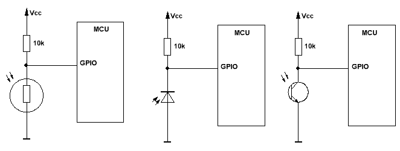

Фототранзистор
Схема:
Транзистор любой.
Верхний резистор регулирует чувствительность и подбирается, исходя из диапозона сопротивлений фоторезистора.
Нижний правый резистор - токоограничивающий для светодиода.
Фототранзистор
Выглядит как обычный светодиод, только корпус прозрачный. Вычисляется обычным мультиметром. Достаточно включить омметр между его эмитером и коллектором (базы у него нет) и посветить на него, как его сопротивление рухнет — с десятков килоом до считанных ом. Работает фототранзистор подобно обычному — держит ток, но в качестве управляющего воздействия тут не ток базы, а световой поток.
Фотодиод
Внешне ничем не отличается от фототранзистора или обычного светодиода в прозрачном корпусе. Также порой встречаются древние фотодиоды в металлических корпусах. В отличии от фототранзистора, может работать в двух разных режимах. В фотогальваническом и фотодиодном.
В первом, фотогальваническом, варианте фотодиод ведет себя как солнечная батарейка, то есть посветил на него — на выводах возникло слабенькое напряжение. Его можно усилить и применить.
Но проще работать в фотодиодном режиме. Тут мы подаем на фотодиод обратное напряжение. Поскольку он хоть и фото, но диод, то в обратную сторону напряжение не пойдет, а значит его сопротивление будет близко к обрыву. Если его засветить, то диод начнет очень сильно подтравливать и сопротивление его будет резко падать, на несколько порядков как у фототранзистора.
Спектр
Кроме типа прибора у него еще есть рабочий спектр. Например, фотодетектор, заточенный на инфракрасный спектр (а их большинство), практически не реагирует на свет зеленого или синего светодиода. Плохо реагирует на лампу дневного света, но хорошо реагирует на лампу накаливания и красный светодиод, а уж про инфракрасный и говорить нечего. Так что не стоит удивляться если фотодатчик плохо реагирует на свет, - возможно, он работает в другом спектре.
Схемы включения
С фотодиодом и фототранзистором нужно определить где у него анод/катод или эмитер/коллектор. Делается это с помощью мультиметра, установленного в режим прозвонки диодов. В этом режиме показывается падение напряжения на диоде/транзисторе, а падение напряжения тут в основном зависит от его сопротивления (U=I*R). Засветив датчик, следим за показаниями. Если число резко уменьшилось, значит все верно - красный провод на катоде/коллекторе, а черный на аноде/эмитторе. Если падение напряжения не изменилось, то провода следует поменять местами.

В затемненном состоянии фотодиод не пропускает ток в обратном направлении, фототранзистор тоже закрыт, а у фоторезистора сопротивление весьма высоко. Сопротивление входа близко к бесконечности, а значит на входе будет полное напряжение питания т.е. логическая единица. Стоит теперь засветить диод/транзистор/резистор, как сопротивление резко падает, а вывод оказывается посажен наглухо на землю, что будет где-то на уровне логического нуля.
В AVR и PIC, в принципе, можно даже резистор не ставить, вполне хватит внутренней подтяжки: DDRx=0 PORTx=1.
Если надо именно измерять освещенность, а не ловить светло/темно, то надо подцеплять все на АЦП и подтягивающий резистор делать переменным, для подстройки параметров.
Есть продвинутый тип фотодатчиков — TSOP. В нем встроенный детектор частоты и усилитель.